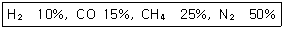
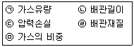
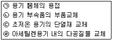
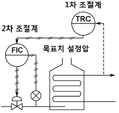
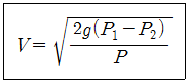

가스산업기사 (2009-08-30 기출문제)
1과목: 연소공학
1. 상용의 상태에서 가연성 가스가 체류해 위험하게 될 우려가 있는 장소를 무엇이라 하는가?
- 0종 장소
- 1종 장소
- 2종 장소
- 3종 장소
(정답률: 89%)

2. 메탄(CH4)의 공기 중에서의 비중은 약 얼마인가?
- 0.55
- 0.65
- 0.75
- 0.85
(정답률: 78%)
3. 가연성 물질의 인화 특성에 대한 설명으로 틀린 것은?
- 증기압을 높게 하면 인화위험이 커진다.
- 연소범위가 넓을수록 인화위험이 커진다.
- 비점이 낮을수록 인화위험이 커진다.
- 최소점화에너지가 높을수록 인화위험이 커진다.
(정답률: 88%)
4. 가스의 분류는 연소 특성에 따라 4A부터 13A까지 구분한다. 여기에서 숫자 4 또는 13이 의미하는 것은?
- 밀도계수
- 기체상수
- 연소속도
- 웨버지수
(정답률: 78%)
5. 정상동작 상태에서 주변의 폭발성 가스 또는 증기에 점화시키지 않고 점화시킬 수 있는 고장이 유발되지 않도록 한 방폭구조는 어느 것인가?
- 특수방폭구조
- 비점화방폭구조
- 본질안전방폭구조
- 몰드방폭구조
(정답률: 90%)
6. 다음 중 열역학 제2법칙에 대한 설명이 아닌 것은?
- 열은 스스로 저온체에서 고온체로 이동할 수 없다.
- 효율이 100%인 열기관을 제작하는 것은 불가능하다.
- 자연계에 아무런 변화도 남기지 않고 어느 열원의 열을 계속해서 일로 바꿀 수 없다.
- 에너지의 한 형태인 열과 일은 본질적으로 서로 같고, 열은 일로, 일은 열로 서로 전환이 가능하며, 이때 열과일 사이의 변환에는 일정한 비례관계가 성립한다.
(정답률: 87%)
7. 메탄가스 2m3을 완전연소시키는 데 필요한 공기량은 표준상태에서 몇 m3인가? (단, 산소는 공기 중에 20vol% 함유한다.)
- 5
- 10
- 15
- 20
(정답률: 56%)
8. 메탄 80vol%, 프로판 5vol%, 에탄 15vol% 인 혼합가스의 공기 중 폭발하한계는 얼마인가?
- 2.1%
- 3.3%
- 4.5%
- 5.1%
(정답률: 70%)
9. BLEVE(Boiling Liquid Expanding Vapour Explosion) 현상에 대한 설명으로 가장 옳은 것은?
- 물이 점성의 뜨거운 기름 표면 아래서 끓을 때 연소를 동반하지 않고, over flow 되는 현상
- 물이 연소유(oil)의 뜨거운 표면에 들어갈 때 발생되는 over flow 현상
- 탱크바닥에 물과 기름의 에멀전이 섞여있을 때 기름의 비등으로 인하여 급격하게 over flow 되는 현상
- 과열상태의 탱크에서 내부의 액화가스가 분출, 기화되어 착화되었을 때 폭발 적으로 증발하는 현상
(정답률: 87%)
10. 연소범위에 대한 설명 중 틀린 것은?
- 수소가스의 연소범위는 약 4~75vol% 이다.
- 가스의 온도가 높아지면 연소범위는 좁아진다.
- 아세틸렌은 자체분해폭발이 가능하므로 연소상한계를 100%로도 볼 수 있다.
- 연소범위는 가연성 기체의 공기와의 혼합에 있어 점화원에 의해 연소가 일어날 수 있는 범위를 말한다.
(정답률: 87%)
11. 메탄의 위험도 근사 값으로 옳은 것은?
- 1
- 2
- 3
- 4
(정답률: 69%)
12. 가정용 프로판에 대한 설명으로 옳은 것은?
- 공기보다 가볍다.
- 완전연소하면 탄산가스만 생성된다.
- 상온에서는 액화시킬 수 없다.
- 1몰의 프로판을 완전연소하는 데 5몰의 산소가 필요하다.
(정답률: 91%)
13. 중유의 저위발열량이 10000kcal/kg의 연료 1kg을 연소시킨 결과 연소열 7500kcal/kg이었다. 이 경우의 연소효율은 몇 %인가?
- 65
- 75
- 85
- 95
(정답률: 88%)
14. 목탄, 코크스 등이 연소하는 경우 다음 중 어느 경우에 해당되는가?
- 분해연소
- 표면연소
- 자기연소
- 증발연소
(정답률: 75%)
15. 외부로부터 불씨를 접촉하여 연소를 개시할 수 있는 최저온도로서 가연성 증기를 발생할 수 있는 온도는?
- 자연발화점
- 착화점
- 인화점
- 발화점
(정답률: 84%)
16. 다음 연소 및 폭발에 대한 설명으로 틀린 것은?
- 연소는 산소와 가연성 물질과의 반응에 의해서 일어난다.
- 연소반응과 직접적인 관계가 없는 불연성 가스에는 질소, 아르곤, 헬륨 등이 있다.
- 폭발이란 급격한 압력의 변화를 수반 하는 파열 또는 팽창되는 현상이다.
- 가연성 가스에는 이산화탄소, 수소, 암모니아, 이산화질소, 오존 등이 있다.
(정답률: 82%)
17. 0℃, 1atm에서 10m3의 다음 조성을 가지고, 기체연료의 이론공기량은 약 몇 m3인가?

- 8.7
- 16.8
- 20.6
- 29.8
(정답률: 30%)
18. 가연성 혼합기체가 폭발범위 내에 있을 때 점화원으로 작용할 수 있는 정전기의 방지 대책으로 틀린 것은?
- 접지를 실시한다.
- 제전기를 사용하여 대전된 물체를 전기적 중성 상태로 한다.
- 습기를 제거하여 가연성 혼합기가 수분과 접촉하지 않도록 한다.
- 인체에서 발생하는 정전기를 방지하기 위하여 방전복 등을 착용하여 정전기 발생을 제거한다.
(정답률: 89%)
19. 과잉공기량이 지나치게 많을 때 나타나는 현상으로 틀린 것은?
- 배기가스 온도의 상승
- 연료소비량 증가
- 연소실 온도 저하
- 배기가스에 의한 열손실 발생
(정답률: 36%)
20. 연소부하율에 대하여 가장 옳게 설명한 것은?
- 연소실의 단위체적당 열발생률
- 연소실의 염공면적당 입열량
- 연소혼합기의 분출속도와 연소속도와의 비율
- 연소실의 염공면적과 입열량의 비율
(정답률: 80%)
2과목: 가스설비
21. 가스배관의 구경을 산출하는 데 필요한 것으로만 짝지어진 것은?

- ㉠, ㉡, ㉢, ㉣
- ㉡, ㉢, ㉣, ㉤
- ㉠, ㉡, ㉢, ㉤
- ㉠, ㉡, ㉣, ㉤
(정답률: 86%)
22. 동관용 공구 중 동관 끝을 나팔형으로 만들어 압축 이음 시 사용하는 공구로서 가장 적당한 것은?
- 익스팬더
- 사이징 툴
- 플레어링 툴
- 리머
(정답률: 73%)
23. 흡입압력이 3kg/cm2(a)인 3단 압축기가 있다. 각 단의 압축비를 3이라 할 때 제3단의 토출압력은 약 몇 kg/cm2(a)가 되는가?
- 27
- 49
- 63
- 81
(정답률: 52%)
24. 고체 내부에 국부적으로 형성된 변형에너지가 급격히 방출하면서 발생되는 탄성파 또는 이와 유사한 파를 탐촉자로 탐지하여 분석함으로써 배관, 압력 용기 및 구조물의 상태를 검사하는 방법은?
- 음향방출시험검사
- 초음파탐상검사
- 와전류탐상검사
- 방사선투과검사
(정답률: 50%)
25. 용기에 산소가 충전되어 있다. 이 용기의 온도가 15℃일 때 압력은 150kg/cm2(a)이다. 이 용기가 직사일광을 받아서 용기의 온도가 40℃로 상승하였다면 이때의 압력은 몇 kg/cm2(a)이 되겠는가?
- 125
- 143
- 163
- 186
(정답률: 57%)
26. 도시가스 원료의 접촉분해공정에서 반응온도가 상승하면 일어나는 현상은?
- CH4, CO가 많고, CO2, H2가 적은 가스 생성
- CH4, CO2가 적고, CO, H2가 많은 가스 생성
- CH4, H2가 많고, CO2, CO가 적은 가스 생성
- CH4, H2가 적고, CO2, CO가 많은 가스 생성
(정답률: 76%)
27. 펌프의 토출량이 6m3/min이고, 송출구의 안지름이 20cm일 때 유속은 약 몇 m/s인가?
- 1.46
- 2.74
- 3.18
- 4.54
(정답률: 54%)
28. 다음 중 LNG 기화장치 중 여러 개의 fin tube로 된 판넬로 구성되며, 해수를 가열원으로 사용하여 직접 LNG를 기화시키는 기화기는?
- SMV(Submerged Vaporizer)
- ORV(Open Rack Vaporizer)
- IFV(Intermediate Fluid Vaporizer)
- AHV(Atomospheric-Heated Vaporizer)
(정답률: 73%)
29. 황동(Brass)과 청동(Bronze)은 구리와 다른 금속과의 합금이다. 각각 무슨 금속인가?
- 주석, 인
- 알루미늄, 아연
- 아연, 주석
- 알루미늄, 납
(정답률: 86%)
30. 강의 열처리에서 뜨임(tempering)을 하는 주목적은?
- 담금질에 의한 잔류응력을 제거하고, 적당한 인성을 부여하기 위하여
- 강의 경도를 증가시키고, 인성을 줄이기 위하여
- 내부에서 생긴 응력을 제거하고, 표준 조직을 만들기 위하여
- 강철의 비중을 줄이고 전기저항, 잔류 자기를 증가시키며, 연신율을 감소시키기 위하여
(정답률: 71%)
31. 저온·고압 재료로 사용되는 특수강의 구비조건이 아닌 것은?
- 크리프 강도가 작을 것
- 접촉 유체에 대한 내식성이 클 것
- 고압에 대하여 기계적 강도를 가질 것
- 저온에서 재질의 노화를 일으키지 않을 것
(정답률: 87%)
32. 갈바닉 부식에 대한 설명으로 틀린 것은?
- 이종금속 접촉부식이라고도 한다.
- 전위가 낮은 금속표면에서 방식이 된다.
- 전위가 낮은 금속표면에서 양극반응이 진행된다.
- 두 종류의 금속이 접촉에 의해서 일어나는 부식이다.
(정답률: 67%)
33. 도시가스용 부취제가 갖추어야 할 조건이 아닌 것은?
- 배관을 부식시키지 않을 것
- 화학적으로 안정된 것일 것
- 보통 존재하는 냄새와는 명확하게 구별될 것
- 물에 잘 용해되고, 토양에 대한 투과성이 적을 것
(정답률: 91%)
34. 직동식 정압기의 기본 구성요소가 아닌 것은?
- 다이어프램
- 스프링
- 메인밸브
- 플로우트
(정답률: 68%)
35. 고압가스장치의 운전을 정지하고 수리할 때 유의할 사항으로 가장 거리가 먼 것은?
- 가스의 치환
- 안전밸브 작동
- 장치 내의 가스분석
- 배관차단 확인
(정답률: 76%)
36. 지하 도시가스 매설배관에 Mg과 같은 금속을 배관과 전기적으로 연결하여 방식하는 방법은?
- 희생양극법
- 외부전원법
- 선택배류법
- 강제배류법
(정답률: 87%)
37. 아세틸렌 충전 중의 압력은 2.5MPa 이하 이어야 한다. 이 때 첨가하는 희석제가 아닌 것은?
- 질소
- 에틸렌
- 메탄
- 이산화탄소
(정답률: 58%)
38. 다음 중 loading형으로 정특성, 동특성이 양호 하며 비교적 콤팩트한 형식의 정압기는 어느 것인가?
- KRF식 정압기
- Fisher식 정압기
- Axial-flow식 정압기
- Reynolds식 정압기
(정답률: 87%)
39. 단열을 한 배관에 작은 구멍을 내고 이 관에 압력이 있는 액체를 흐르게 하면 유체가 작은 구멍을 통할 때 유체의 압력이 하강함과 동시에 온도가 변화하는 현상을 무엇이 라고 하는가?
- 베르누이의 효과
- 줄-톰슨 효과
- 토리첼리 효과
- 도플러의 효과
(정답률: 67%)
40. 압축가스를 충전하는 용접 용기에서 최고 충전압력이란?
- 상용압력 중 최고압력
- 내압시험압력의 1.1배의 압력
- 기밀시험압력의 5/3배의 압력
- 35℃의 온도에서 그 용기에 충전할 수 있는 가스의 압력 중 최고압력
(정답률: 53%)
3과목: 가스안전관리
41. 충전설비 중 액화석유가스의 안전을 확보하기 위하여 필요한 시설 또는 설비에 대하 여는 작동상황을 주기적으로 점검, 확인하여야 한다. 충전설비의 경우 점검주기는?
- 1일 1회 이상
- 2일 1회 이상
- 일주일 1회 이상
- 10일 1회 이상
(정답률: 89%)
42. 다음 중 액화석유가스의 안전관리 및 사업 법상 전문교육의 주기 및 횟수로 옳은 것은 어느 것인가?
- 신규종사 후 3월 이내 및 그 후 1년이 되는 해마다 1회
- 신규종사 후 6월 이내 및 그 후 1년이 되는 해마다 1회
- 신규종사 후 6월 이내 및 그 후 2년이 되는 해마다 1회
- 신규종사 후 6월 이내 및 그 후 3년이 되는 해마다 1회
(정답률: 31%)
43. 아세틸렌의 발연황산 시약을 사용한 오르자트법에 의한 품질검사의 기준에서 순도는 몇 % 이상 되어야 하는가?
- 98
- 98.5
- 99
- 99.5
(정답률: 79%)
44. 저장량 15톤의 액화산소 저장탱크를 지하에 설치할 경우 인근에 위치한 연면적 300m2인 교회와 몇 m 이상의 거리를 유지하여야 하는가?
- 6
- 7
- 12
- 14
(정답률: 58%)
45. 다음 내용적이 30000L인 액화산소 저장탱크의 저장능력은 몇 kg인가? (단, 비중은 1.14이다.)
- 27520
- 30780
- 31780
- 31920
(정답률: 77%)
46. 시안화수소를 저장하는 때에는 1일 1회 이상 다음 중 무엇으로 가스의 누출검사를 실시하는가?
- 질산구리벤젠지
- 묽은 질산은용액
- 묽은 황산용액
- 염화파라듐지
(정답률: 88%)
47. 가스의 종류와 용기도색의 구분이 잘못된 것은?
- 액화염소 : 황색
- 액화암모니아 : 백색
- 에틸렌(의료용) : 자색
- 사이클로프로판(의료용) : 주황색
(정답률: 76%)
48. 액화석유가스 수송 배관의 온도는 항상 몇 ℃ 이하를 유지하여야 하는가?
- 30
- 35
- 40
- 50
(정답률: 91%)
49. 아세틸렌가스 또는 압력이 9.8MPa 이상인 압축가스를 용기에 충전하는 시설에서 방호벽을 설치하지 않아도 되는 경우는?
- 압축기와 그 충전장소 사이
- 충전장소와 긴급차단장치 조작 장소 사이
- 압축기와 그 가스충전용기 보관장소 사이
- 충전장소와 그 충전용 주관밸브와 조작밸브 사이
(정답률: 67%)
50. 특정설비에는 설계온도를 표기하여야 한다. 이때 사용되는 설계온도의 기호는?
- HT
- DT
- DP
- TP
(정답률: 82%)
51. 내용적인 50L인 가스 용기에 내압시험압력 3.0MPa의 수압을 걸었더니 용기의 내용적이 50.5L로 증가하였고 다시 압력을 제거 하여 대기압으로 하였더니 용적이 50.002L 가 되었다. 이 용기의 영구증가율을 구하고 합격인가, 불합격인가 판정한 것으로 옳은 것은?
- 0.2%, 합격
- 0.2%, 불합격
- 0.4%, 합격
- 0.4, 불합격
(정답률: 79%)
52. 다음 독성 가스와 그 제독제가 옳지 않게 짝지어진 것은?
- 아황산가스 : 물
- 포스겐 : 소석회
- 황화수소 : 물
- 염소 : 가성소다 수용액
(정답률: 64%)
53. 차량에 고정된 독성 가스탱크의 내용적은 몇 L를 초과하지 않아야 하는가? (단, 액화암모니아는 제외한다.)
- 1000
- 3000
- 12000
- 18000
(정답률: 81%)
54. 가스용품을 제조한 자는 판매전에 시·도 지사의 검사를 받아야 하며 이에 대한 검사는 설계단계검사와 생산단계검사로 구분된다. 다음 생산단계검사에 대한 검사주기의 기준으로 옳은 것은?
- 종합공정검사 대상 가스용품에 대한 수시품질검사는 1년에 1회 이상 실시한다.
- 생산공정검사 대상 가스용품에 대한 공정확인심사는 6개월에 1회 실시한다.
- 생산공정검사 대상 가스용품에 대한 정기품질검사는 1개월에 1회 실시한다.
- 제품확인검사 대상 가스용품에 대한 상시샘플검사는 2개월에 1회 실시한다.
(정답률: 49%)
55. 액화석유가스 자동차용 충전시설의 충전호스의 설치기준으로 옳은 것은?
- 충전호스의 길이는 5m 이내로 한다.
- 충전호스에 과도한 인장력을 가하여도 호스와 충전기는 안전하여야 한다.
- 충전호스에 부착하는 가스주입기는 더블터치형으로 한다.
- 충전기와 가스주입기는 일체형으로 하여 분리되지 않도록 하여야 한다.
(정답률: 78%)
56. 액화석유가스 사용시설의 가스계량기 설치 장소에 대한 기준으로 틀린 것은?
- 가스계량기는 화기와 2m 이상의 우회거리를 유지하는 곳에 설치하여야 한다.
- 가스계량기는 수시로 환기가 가능한 장소에 설치하여야 한다.
- 가스계량기와 전기계량기와의 거리는 30cm 이상의 거리를 유지하여야 한다.
- 가스계량기를 격납상자 내에 설치하는 경우에는 설치높이의 제한을 하지 아니한다.
(정답률: 66%)
57. 다음 중 용기 제조자의 수리 범위에 해당하는 것을 모두 옳게 나열한 것은?

- ㉠, ㉡
- ㉢, ㉣
- ㉠, ㉡, ㉢
- ㉠, ㉡, ㉢, ㉣
(정답률: 83%)
58. 고압가스 충전용기의 운반기준으로 틀린 것은?
- 가연성 가스 또는 산소를 운반하는 차량에는 소화설비 및 재해발생방지를 위한 응급조치에 필요한 자재 및 공구 등을 휴대할 것
- 염소와 아세틸렌, 암모니아 또는 수소는 동일차량에 적재하여 운반하지 아니할 것
- 가연성 가스와 산소를 동일차량에 적재하여 운반하는 때에는 그 충전용기와 밸브가 마주보도록 할 것
- 충전용기와 소방기본법이 정하는 위험물과는 동일차량에 적재하여 운반하지 아니할 것
(정답률: 92%)
59. 공정에 존재하는 위험요소들과 공정의 효율을 떨어뜨릴 수 있는 운전상의 문제점을 찾아내어 그 원인을 제거하는 정성적인 안전성 평가기법은?
- 결함수분석기법(FIA)
- 작업자실수분석기법(HEA)
- 이상위험도분석기법(FMECA)
- 위험과 운전분석기법(HAZOP)
(정답률: 83%)
60. 고압가스 냉동제조시설의 냉동능력 합산기준으로 틀린 것은?
- 냉매가스가 배관에 의하여 공통으로 되어 있는 냉동설비
- 냉매계통을 달리하는 2개 이상의 설비가 1개의 규격품으로 인정되는 설비 내에 조립되어 있는 것
- 4원(元) 이상의 냉동방식에 의한 냉동 설비
- 모터 등 압축기의 동력설비를 공통으로 하고 있는 냉동설비
(정답률: 84%)
4과목: 가스계측
61. 가스크로마토그래피를 이용하여 가스를 검출할 때 반드시 필요하지 않은 것은?
- Column
- Gas Sample
- Carrier gas
- UN detector
(정답률: 83%)
62. MAX 1.0m3/h, 0.5L/rev로 표기된 가스미터가 시간당 50회전하였을 경우 가스유량은?
- 0.5m3/h
- 25L/h
- 25m3/h
- 50L/h
(정답률: 82%)
63. 가스압력조정기(Regulator)의 역할에 대한 설명으로 가장 옳은 것은?
- 용기 내로의 역화를 방지한다.
- 가스를 정제하고, 유량을 조절한다.
- 용기 내의 압력이 급상승할 경우 정상화한다.
- 공급되는 가스의 압력을 연소기구에 적당한 압력까지 감압시킨다.
(정답률: 74%)
64. 습식 가스미터의 특징에 대한 설명으로 옳은 것은?
- 계량이 정확하다.
- 설치면적이 작다.
- 사용 중 기차의 변동이 크다.
- 고압가스의 계량에 적합하다.
(정답률: 70%)
65. 가스누출 확인시험지와 검지가스가 옳게 연결된 것은?
- KI 전분지－CO
- 연당지－할로겐가스
- 염화파라듐지－HCN
- 리트머스시험지－알칼리성 가스
(정답률: 65%)
66. 가스의 굴절률 차이를 이용하여 가연성 가스의 농도를 측정하는 검출기는?
- 안전등형
- 간섭계형
- 열선형
- 검지관형
(정답률: 67%)
67. 압력계의 눈금이 1.2MPa을 나타내고 있으며, 대기압이 720mmHg일 때 절대압력은약 몇 kPa인가?
- 129.6
- 1296
- 12960
- 129600
(정답률: 57%)
68. 헴펠식 분석장치를 이용하여 가스성분을 정량하고자 할 때 흡수법에 의하지 않고 연소법에 의해 측정하여야 하는 가스는?
- 수소
- 이산화탄소
- 산소
- 일산화탄소
(정답률: 73%)
69. 가스미터는 측정방식에 따라 실측식과 추량식으로 구별한다. 다음 중 추량식 가스미터가 아닌 것은?
- 회전자형
- 오리피스형
- 터빈형
- 벤투리형
(정답률: 73%)
70. 전기저항 온도계에서 측온 저항체의 공칭저항치라고 하는 것은 몇 ℃의 온도일 때 저항소자의 저항을 의미하는가?
- －273℃
- 0℃
- 5℃
- 21℃
(정답률: 84%)
71. 산소 농도를 측정할 때 기전력을 이용하여 분석하는 계측기기는?
- 세라믹 O2 계
- 연소식 O2 계
- 자기식 O2 계
- 밀도식 O2 계
(정답률: 66%)
72. 탄성식 압력계가 아닌 것은?
- 분동식 압력계
- 격막식 압력계
- 벨로즈식 압력계
- 부르돈관식 압력계
(정답률: 47%)
73. 오리피스로 유량을 측정하는 경우 압력차가 2배로 변했다면 유량은 몇 배로 변하겠는가?
- 1배
- √2
- 2배
- 4배
(정답률: 78%)
74. 다음 중 표준전구의 필라멘트 휘도와 복사에너지의 휘도를 비교하여 온도를 측정하는 온도계는?
- 광고 온도계
- 복사 온도계
- 색 온도계
- 서미스터(thermister)
(정답률: 68%)
75. 다음 중 감도에 대한 설명으로 틀린 것은?
- 감도는 측정량의 변화에 대한 지시량의 변화의 비로 나타낸다.
- 감도가 좋으면 측정시간이 길어진다.
- 감도는 측정결과에 대한 신뢰도의 척도이다.
- 감도가 좋으면 측정범위는 좁아진다.
(정답률: 61%)
76. 다음 그림과 같은 자동제어방식은?

- 피드백 제어
- 시퀀스 제어
- 캐스케이드 제어
- 프로그램 제어
(정답률: 87%)
77. 가스미터 출구측 배관을 수직배관으로 설치하지 않는 가장 큰 이유는?
- 설치면적을 줄이기 위하여
- 화기 및 습기 등을 피하기 위하여
- 수분응축으로 밸브의 동결을 방지하기 위하여
- 검침 및 수리 등의 작업이 편리하도록 하기 위하여
(정답률: 89%)
78. 가스미터 선정 시 고려할 사항으로 틀린 것은?
- 가스의 최대사용유량에 적합한 계량 능력인 것을 선택한다.
- 가스의 기밀성이 좋고, 내구성이 큰 것을 선택한다.
- 사용 시 기차가 커서 정확하게 계량할 수 있는 것을 선택한다.
- 내열성, 내압성이 좋고, 유지관리가 용이한 것을 선택한다.
(정답률: 87%)
79. 피드백(Feed back) 제어에 대한 설명으로 틀린 것은?
- 다른 제어계보다 판단·기억의 논리기 능이 뛰어나다.
- 입력과 출력을 비교하는 장치는 반드시 필요하다.
- 다른 제어계보다 정확도가 증가된다.
- 제어대상 특성이 다소 변하더라도 이것에 의한 영향을 제어할 수 있다.
(정답률: 61%)
80. 피토관에 의한 유속측정은 다음의 식을 이용한다. 이때 P1, P2는 각각 무엇을 의미 하는가?

- 동압과 전압
- 전압과 정압
- 정압과 동압
- 동압과 유체압
(정답률: 60%)